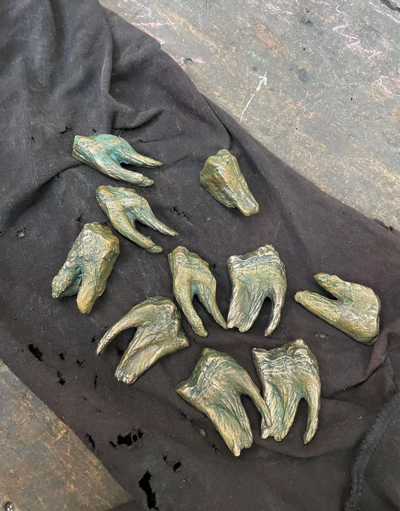
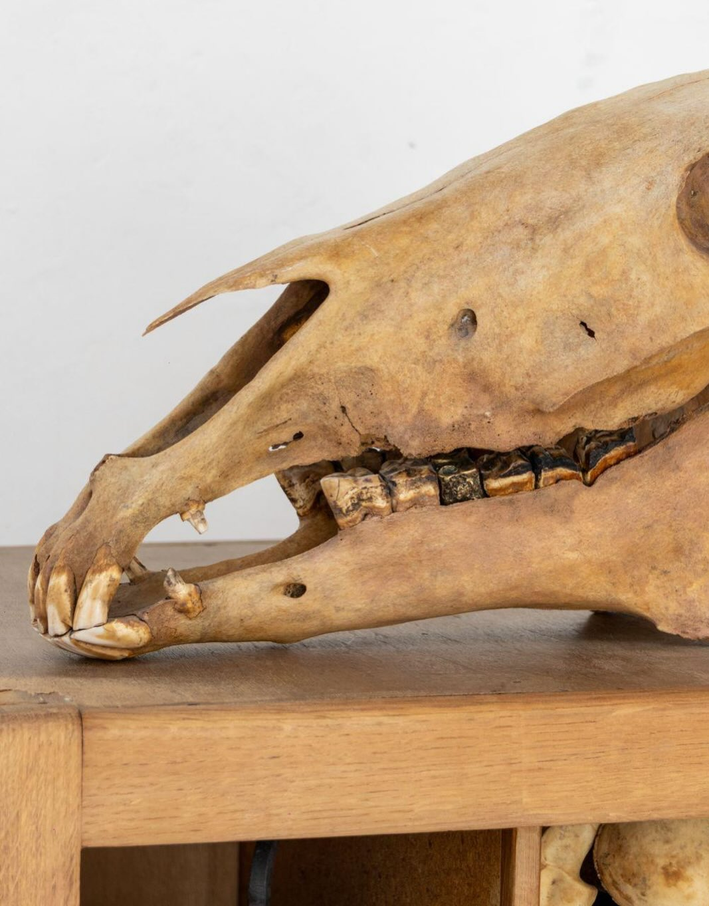

Henri Chetaille
Entrée 003 · La Bride
Né2002
RésidenceParis
Au registreLa Bride · KR/01
Œuvres — 2 entrées


Dents de cheval, 2026 · 10 pièces uniques · dimensions variables
Demander la fiche →Solo exhibitions
2025La pierre des trois communes / Du cheval mi et mu bien — DNA 2025, Beaux-Arts de Paris
Group exhibitions
2026Des mots et des Mondes, Palais des Beaux-Arts, Paris (curation La filière des expositions & Mélanie Bouteloup)
2026Art Brussels, Galerie Magnin A, Bruxelles
2025Under the Nave, Chapelle des Petits-Augustins, Paris (atelier Petrit Halilaj & Álvaro Urbano)
2025Cizéal, Village Reille, Paris
2025Les Blémis ne venaient pas d’Éthiopie, La Volonté, 93
2025E HUPI!, Hajde! Foundation, Kosovo (curation Petrit Halilaj)
2025Mémoire vive (Galerie Dauphine), Galerie Romero Paprocki, Paris
2025Et puis quoi encore ?, Atelier Michel Blazy, Paris
2025Pain perdu à l’Atelier Trouvé, Atelier Tatiana Trouvé, Paris
Formation
2025–2026École nationale supérieure des beaux-arts de Paris — Atelier : Tatiana Trouvé
2025DNA avec mention, Beaux-Arts de Paris (félicitations du jury, mention « travail remarquable »)
2024–2025École nationale supérieure des beaux-arts de Paris — Ateliers : Michel Blazy ; Petrit Halilaj & Álvaro Urbano
2022–2024École nationale supérieure des beaux-arts de Lyon
2021–2022Classe préparatoire de l’ENSBA Lyon
2020–2021Université Lumière Lyon 2
Prix
2026Prix Dior — finaliste